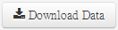

Click on , save the CSV file to your R working directory as data.csv (or another name). The file can be easily read with R:
data <- read.csv("data.csv")
cor(data)
## outcome predictor1 predictor2
## outcome 1.0000 -0.7926 0.3893
## predictor1 -0.7926 1.0000 0.2210
## predictor2 0.3893 0.2210 1.0000
Notice how
- correlation between
outcome and predictor1 is close to the -0.8 we specified
- correlation between
outcome and predictor2 is close to the 0.4 we specified
- correlation between
predictor1 and predictor2 is close to the 0.2 we specified